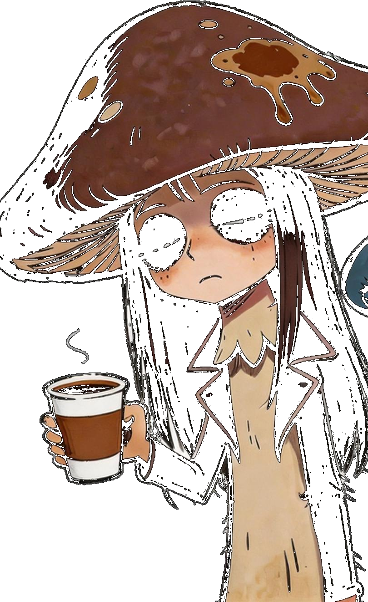
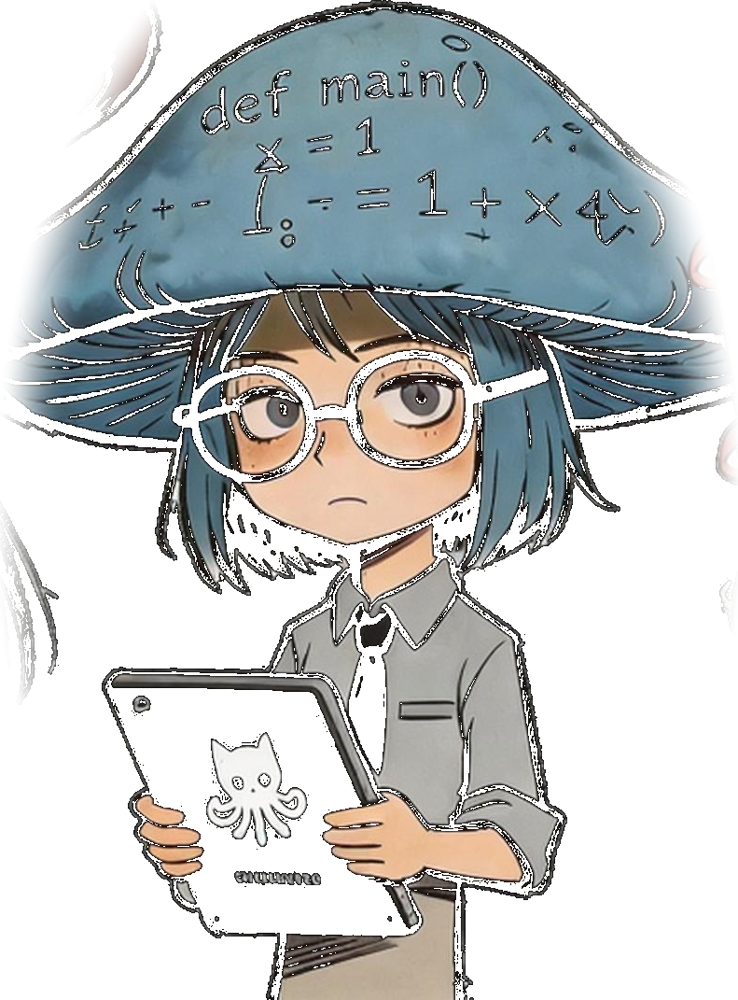
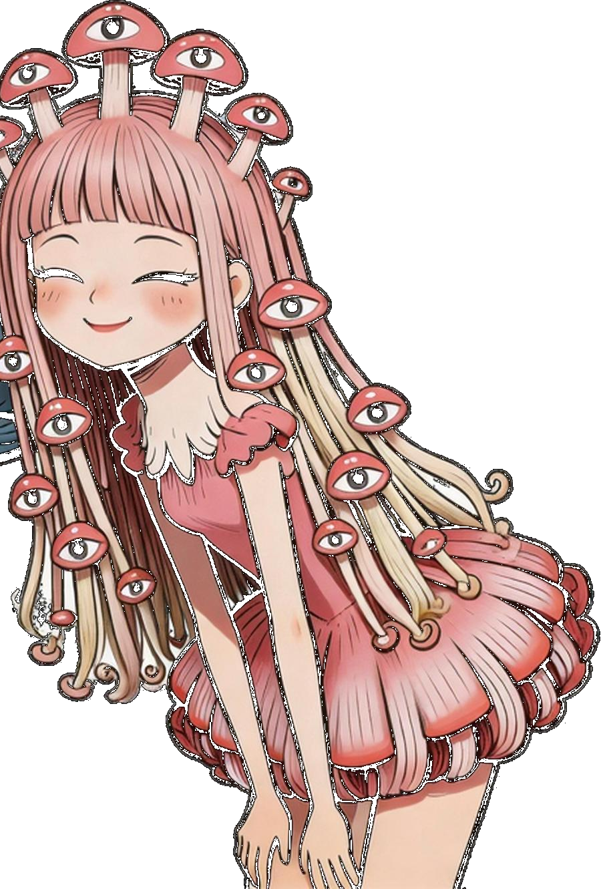
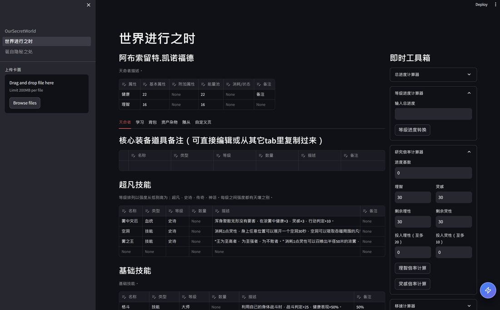
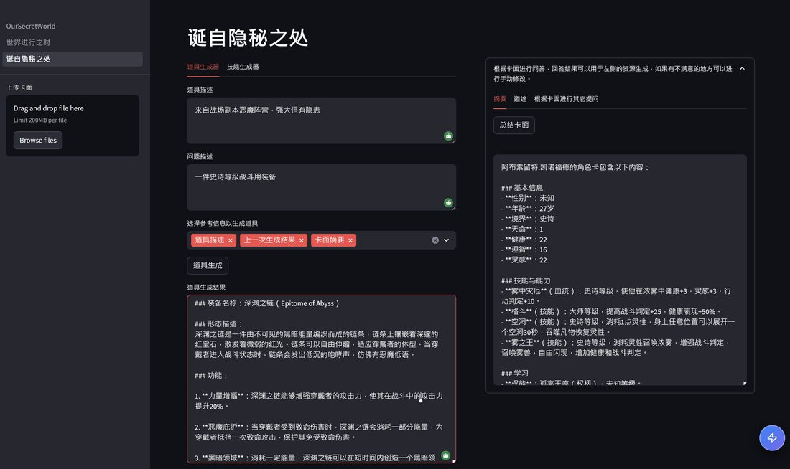
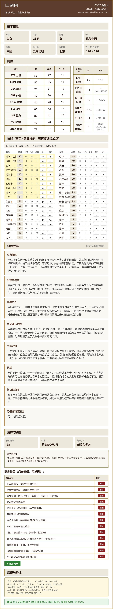
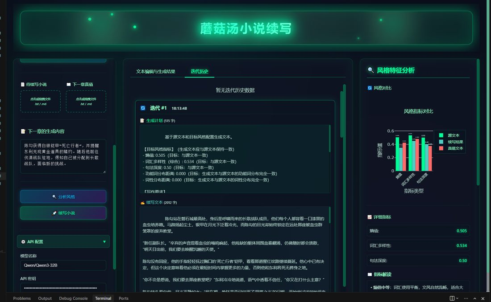

🍄 蘑菇汤计划
2026.02 – 至今
高可扩展性本地知识库及一系列场景化应用 Agent 的系统性工程项目。 摒弃传统向量化路径，提出 embedding-free 预索引架构，逐渐与 agentic search 范式对齐。
- 无向量预索引引擎（mushroom-index）： 设计"实体-文本块"二分图模型，规避状态更新错乱与错误级联，实现知识链接线性可扩展。
- 多模态预索引引擎（myco-library）： 扩展至多模态跨文件场景，针对不同内容节点实现差异化索引策略； 工程底层实现断点续建、多级变更检测局部更新；双层采样策略大幅降低 Token 消耗。
- 共享基建场景化 Agent： 基于共享知识库构建 GitHub 项目调研助手、小众竞品调研助手、个人简历管家， 封装差异化工具集与行为策略。
- 解析流水线并发提速： "预采样生成 Schema → 模型路由 → 并发批处理"Pipeline，将百万字文档解析耗时从小时级压缩至分钟级。

🍄 优优菌
智能简历助手。用户只需把相关资料放进目录，优优菌自动将散乱文件整理成结构化用户知识，进而支撑简历生成、润色、网申助手等应用。

🔍 懒懒菌
GitHub 检索助手。在拆解用户意图的基础上进行多轮检索，漏斗式、渐进式读取对比相关开源项目，拒绝重复造轮子。

👀 看看菌
长尾竞品调研助手。配置多路平台信息检索，挖掘主体关键词及账号，设置定期追踪任务，避免遗漏长尾应用动态。
戳一戳，她们会说话
🎲 跑团工具箱
2023
为跑团固桌搭建的 AI 辅助工具集，覆盖带团全流程的生产力需求。
- 基于 LangChain 搭建核心管线，集成即时数值计算器和结合卡面的资源生成器，显著提升游戏内容生产效率和交互体验。
- 支持卡面解析、卡面问答、资源生成、即时计算等多类带团辅助功能。


🎯 TRPG Meta-Skill Set
2026.04
设计"模组规则卡面解析 → 车卡引导"元技能套件，构建 AI 赋能的全流程跑团角色生成方案。
- 从用户上传素材孵化对应世界观 / 数值引擎 / 建卡流程 skill 作为可插拔模块。
- 主入口 skill 根据意图生成角色卡初稿，实现可编辑 HTML 卡面并导出适配 Excel。


📝 长文本生成与解构 Demo
2025
独立开发的小说续写 Demo——支持文风自适应的长文本生成引擎。 量化并定义多维度的句法 / 语义评估指标， 基于 DSPy 和 TextGrad 技术实现 prompt 的文风自优化。
